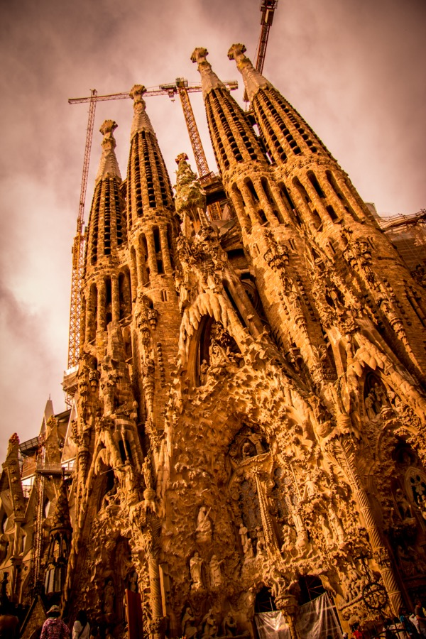
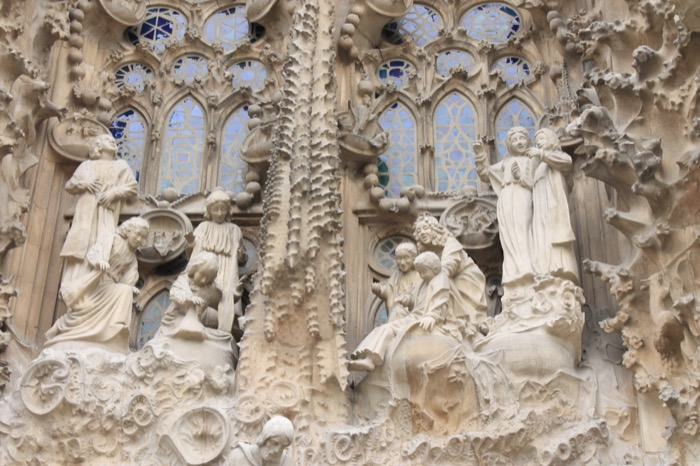
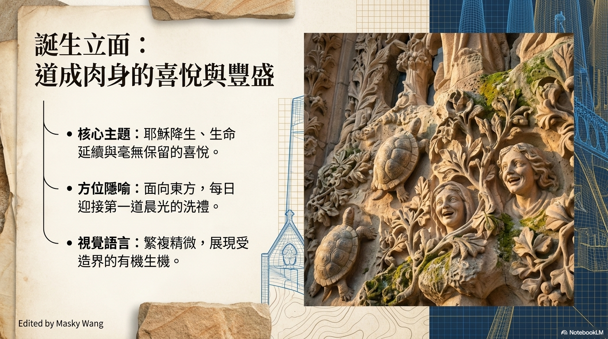
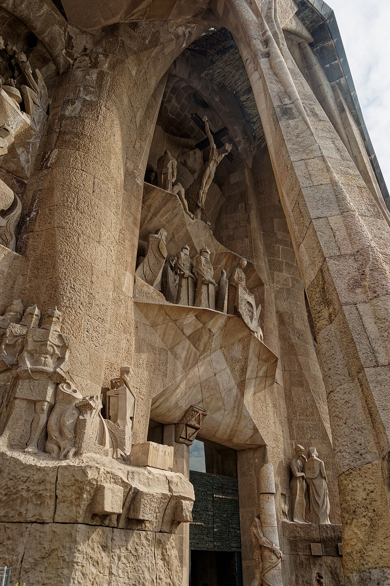
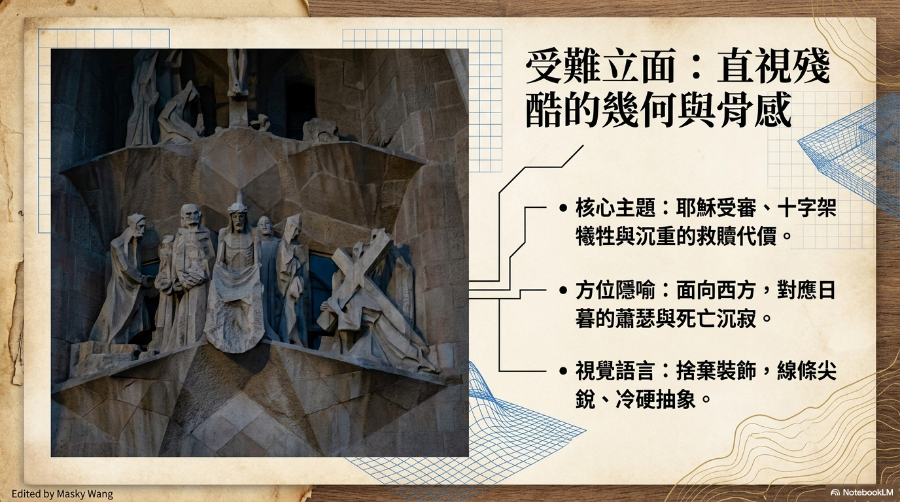
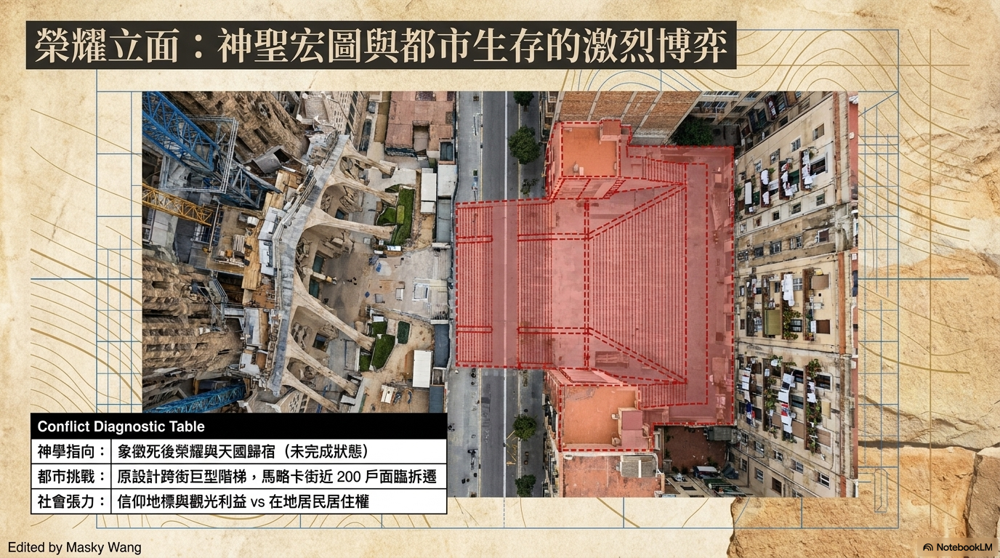

三大立面
刻在石頭上的立體聖經
高第將聖家堂構想為一部石刻聖經，使信眾僅憑凝視建築，便能領悟基督信仰的歷史與奧義。三座立面各述一章——誕生、受難、榮耀——東西南三方，讀遍生命的全程。

東側 ☀已完成 · UNESCO 1984
誕生立面
Façana del Naixement
面向清晨的第一道陽光，誕生立面是高第生前唯一親手主導的篇章。三座門廊分別獻給聖父、聖子、聖靈，滿布烏龜、變色龍、蝸牛與植物，宣告生命降臨的無盡喜悅。
- 🐢 柱腳由烏龜和海龜承托，象徵海陸永恆
- 🌿 125種植物物種刻入石面
- 👼 約30位天使圍繞中央耶穌降生場景
- ⭐ 頂部賽普勒斯樹上有一顆五角星



西側 ✟已完成 · 1976–2005
受難立面
Façana de la Passió
面向夕陽的受難立面，是高第刻意設計為「令人不寒而慄」的空間。雕塑家蘇比拉奇斯以骨骼般的裸線條、扭曲的人體，傳達耶穌受難的沉重痛苦——沒有一絲多餘的裝飾。
- 💀 18根骨架狀柱子，如肋骨般撐起立面
- 🔤 銅門鑄入8,000個新約字元
- 🎲 猶大之吻旁的魔方刻有數學謎題
- 😭 S形敘事動線帶領眼睛讀完受難全程


南側 ✦建設中 · 預計2034
榮耀立面
Façana de la Glòria
規模最宏大的主入口，象徵人類靈魂的最終旅程——起源、審判、死亡與永恆救贖。完工後將有巨型階梯橫跨馬略卡街，是聖家堂最後的拼圖。
- 🏛 完工後將成為三大立面中最高最寬的
- 🌉 主階梯將跨越整條馬略卡街道
- 🔥 七宗罪與七聖事將雕刻其上
- 📅 預計2034–2035年完工，趕上聖家堂全竣工

圖片來源：Wikimedia Commons（CC BY-SA）· 本 PDF 製作：Masky Wang